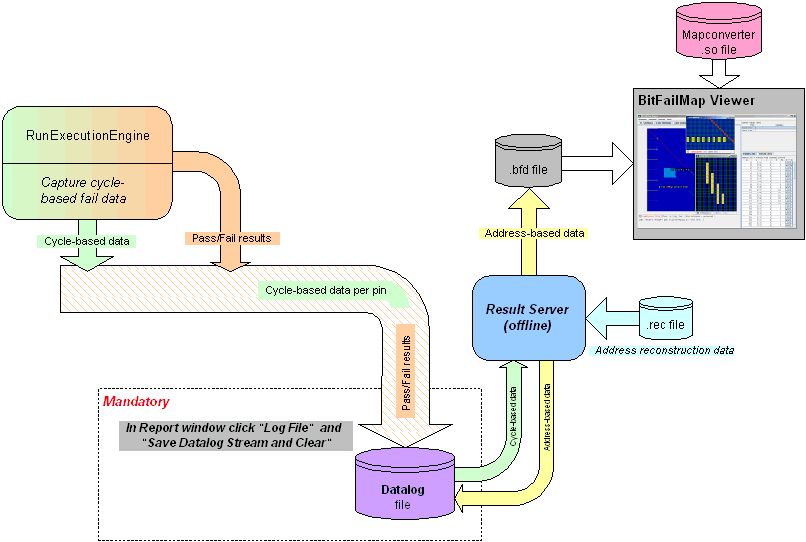

Failure analysis
To execute your test flow with delayed availability of address-based data for all testsuites in a test flow, follow the workflow shown in the figure below.

You need to initiate the creation of address data from the saved data log and the BFM Viewer file (.bfm).
Set the parameters for the test method as described in Parameters for the ExecutionEngine test method.
Functional changes
- Introduced before SmarTest 6.3.2
- MTP 3.0.1: The ExecuteEngine test method replaces the Memtest test methods.